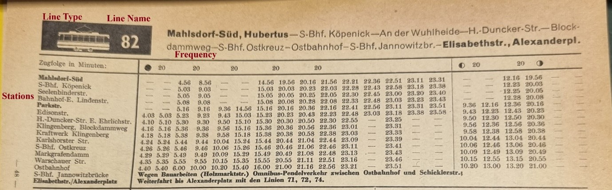
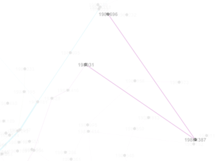
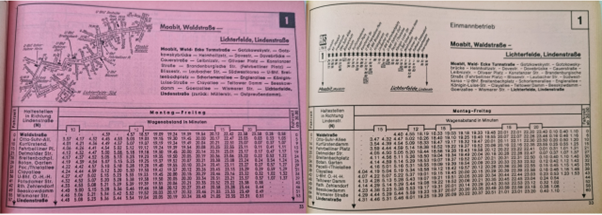

From source to dynamic network model#
Source criticism#
We will now focus on the description of how we go about constructing network models of the Berlin public transportation system from 1945-1989. Just as in any historical investigation, this must begin with the consideration of the sources. We must ask what sources we have available that could inform our understanding, in this case specifically to construct our network. In order to properly ascertain what knowledge can be extrapolated from our network, we must also have an understanding on what the sources’ purpose was and if this makes them reliable to inform our understanding of the system.
The main set of sources that form the basis on which we build our network are the “Fahrplanbücher” (literally ‘timetable books’). These books were published by the Berlin transport authority (BVG) on an annual (early years) and biannual (post-1960) basis during the period under observation. All Fahrplanbücher were consulted at the BVG Archiv in Berlin Köpenick.[38] The Fahrplanbücher provided comprehensive official listings of the entire transport system. They were intended to aid users of the system, which makes them ideal for a systematic overview, as they aimed to encompass line and key stations within a given year. The books feature a complete description of the lines operated by the BVG, including a timetable for each line and the key stops of each line. The information gathered from the Fahrplanbücher is:
Line-names,
stations,
frequency of service at 7:30 am (Monday – Friday),
type of line (U-Bahn (subway), S-Bahn (city railway), Strassenbahn (tram), Bus or Fähre (ferry)) and
year.
Figure 1 - Fahrplan East Berlin 1961 example page
Where available other useful information is also gathered from this source, such as line length by distance (km) and time (min). The gathering of information from these sources was time intensive. It quickly became clear that an approach to use optical character recognition was impractical because of the changing and complex nature of how station names are arranged on the Fahrplan. As such, time intensive manual transcription of station names into a csv table was necessary.[39]
Because of the time intensive nature of the transcription, only a selected range of years is modelled for this work, with the potential of extending this seamlessly in the future. The following years have been incorporated; 1946, 1951, 1956, 1960, 1961, 1964, 1967, 1971, 1976, 1980, 1982, 1984, 1989. In total, 13 Fahrplanbücher were consulted, with the goal of never having a gap of more than 5 years between snapshots. Certain periods, particularly around the early 1960s and 1980s have more snapshots since it was planned to have a particular, more fine-grained historical investigation into changes during these periods in the later sections of this work.
This information allows us to construct a network of stations that is connected by lines for each year. The stations for a year become the node set for the static network and the service between two stations will be the edge set for the network. In addition, each station has a name, and the edges have additional information such as line, frequency, type and length. There are however limitations of the available information in the Fahrplanbücher, some of which can be overcome with additional information while others cannot.
We must also realise that a Fahrplan (timetable) portrays an ideal state of the system. Common issues in transportation systems such as delays, construction and over-crowding are not reflected. However, the impact of this is limited because these are rather momentary challenges to the system and when compared to the 45-year scope of the current project have no real impact on our ability to see the network develop.
Geolocalisation#
Most crucially for this project is that each station is also a physical space in Berlin with coordinates that can be collected as attributes of the respective station. The location of the station is not immediately clear from the station names available in the Fahrplan, as we are limited by the ability of semantic language to describe physical locations. For U-Bahn and S-Bahn stations, we can overcome this limitation with relative ease due to the wealth of published additional information on these larger structures and where the stations are currently or used to be. For tram and bus stations, geolocalisation presents a much greater challenge.
While names such as “Hafenplatz” or “Stößenseebrücke” give strong clues on the approximate location of a station, others can be increasingly difficult to locate based on line name alone, such as a multitude of stations that are named “Berliner Strasse” (of which there are and have been many in Berlin). In general, station names which describe streets in the Fahrplanbücher will indicate that there is a station where the street in the station name intersects with the street that is being driven on. It is therefore necessary to have information which describes the route of each line and given this, we are then able to locate the intersection where the station is.
We have two valuable sources that give us the route of the lines. In many cases (exclusively for West-Berlin), the Fahrplanbuch itself has an image showing the route a particular line takes. In addition to this, we can rely on the work done by Wolfgang Kramer.[40] The other is the well maintained website ([www.berliner-linienchronik.de]{.ul}) run by Fabian Sawall, who on the basis of a variety of sources, including the work of Wolfgang Kramer as well as transportation maps, the Fahrplanbücher, local reports and other BVG material has gathered the routes for all of the lines for most of the years during the period under observation. With this relatively complete information on routes, we are able to approximate the location of stations based on station names. The location of the stations is approximated. For example, when we know a street intersection around which a station is located, the middle of the intersection is chosen as location if no other information is available. This was determined to be the best approach as streets are relatively constant over the past 75 years, while the location of a bus station can vary greatly over the same period of time, therefore choosing the intersection is the most reliable option.
Where there is Wikidata information that link to a station (available for all U-Bahn and S-Bahn stations and a moderate amount of tram stations) it was decided that the station name should be reconciled with this station and the coordinate location of the Wikidata entry will be used. The benefit of this is in the long-term potential for linking the data collection and modelling of this project to the semantic web.
In this project, when no Wikidata entry was available for a station, a large degree of imprecision was introduced by the manual geolocalisation process. Efforts are made to correct inaccurate geolocalisation by measuring the geographic distance of every edge in kilometres. We then go through every edge that had a distance of more than 4.5 kilometres as it was at this point that the most edges were correct. This decision was also made because there is a point of diminishing returns that is then reached. Specifically, this means that as we correct ever smaller issues in geolocalisation, the impact of the correction on our future analysis will lessen. An improvement to the project workflow might have been to have different thresholds for correction for the different transport types. For example, we would no longer check U-Bahn and S-Bahn edges where the distance is more than 4.5 kilometres, but we would have a lower threshold for tram and bus edges.
An alternative way, that would not involve checking edges purely based on the distance of the edge would be to visualise the network in Gephi using the Geo Layout plugin. With this plugin we would be able to visualise the network using the x and y coordinates we assigned. When this is done, errors in localisation become evident under close inspection as in figure 2 where we see that the node no longer follows the fairly linear path it was on before but deviates; given this we can assume that the localisation was wrong, and we can investigate the node further to correct this.
Figure 2 - example of wrong localisation of node
This is however a time intensive process for correction and was therefore not pursued on a consistent basis. The mention here is to remark on the possibilities to further improve the data available.
In total, the effect of wrong geolocalisation in the project as is should be minimal. There may be an impact for processes such as investigating geographic-based centrality measures, however, with a fairly low threshold of distance and most of the stations being well geolocalised, the impact on such metrics should be minimal. Other measures such as, for example, those investigating connectivity will not be affected at all by incorrect geolocalisation.
Incomplete data#
There is other important information that we could use for our sources that is not available in the Fahrplanbücher. It is important that we understand this incompleteness and try to adjust by consulting other sources where possible and taking actions to mitigate the effect of incompleteness on our interpretation where the information is not available.
Time window#
A major gap is that we are looking at a specific snapshot, but we do not know how long this snapshot was in place for, or even if it was in place at all. The sources we have change year to year. but we are only using intervals in our analysis. The implication is that there are steady changes between snapshots but in actuality we could be missing key components taking place between the years of our intervals. For example, since we have only collected data from 1946, followed by 1951 as the next snapshot, we will be missing specific information relating to the effects of the 1949 BVG strike. This strike was a response to currency reforms that left workers for the Reichsbahn, who worked in the West being paid in the weaker Ostmark. Another historical occurrence during this period that will not be reflected in the gathered data is the Berlin blockade, which lasted from June 1948 to May 1949. We know that during this period, public transportation was severely affected in part due to a lack of electricity to run the system.[41] This is a real limitation of the investigation as it currently stands. However, the pipeline to extend the project with further snapshot data exists and further information can be seamlessly integrated into both the database and the analysis of the network.[42] As it stands, events like the Berlin Blockade and BVG strike of 1949 likely caused temporary shutdowns and service disruptions. While we cannot pinpoint these disruptions in the yearly snapshots, knowing this instability existed has to make us cautious when interpreting metrics that assume continuous service.
The necessity to start in 1946 rather than 1945 is founded in the historical information we have available. Information on the state of the public transportation system of Berlin in 1945 indicates that there was no stability during this year and, while at the end of the war some limited services did start running again, many, such as the S-Bahn, ran without a schedule. We know that most of the network had started again by February 1946, and this is also the first post-war Fahrplanbuch that we have available.[43] Thus, it was necessary to make 1946 the start date for the investigation.
Incomplete station information#
Another issue with the sources available is that in most of the Fahrplanbücher (excluding the West-Berlin after 1975) only the “most important stations” are included for each (bus and tram) line. The exact definition of what constitutes a “most important station” is not fully clear, but by analysing all the tram lines, a few assumptions can be made about this. Firstly, it seems clear that stations where there is a possibility of transferring to a new line are regarded as important. Secondly, it is evident that stations where a lot of passengers would get-on/get-off are included, such as factory areas. Finally, naturally we always have the end stations of a line available. Ultimately, the incompleteness of stations does not have a drastic impact on our ability to model a network based on the information available. This is because we still expect that the connectivity of the network is fully portrayed in the information and that although some stations in between the start/end are missing, we can still track the full extent of every line. The limitation does however mean that there is a degree of bias involved in the data we have available.
Figure 3 Fahrplanbuch comparison West Berlin 1971 (left) & 1976 (right)
Apart from the bias, we will also have to contend with the changes in the way that stations were recorded, particularly in West Berlin Fahrplanbücher. While in East Berlin we consistently only see the important stations being listed, in the West, this changes. After 1975, West Berlin Fahrplanbücher seem to include all stations serviced by a line. This will skew the number of stations in our data for this period.
We also see that in the 1989 West Berlin Fahrplanbuch, serviced stations for bus routes start depending on the direction of the service. Some stations in a line are only served in one direction. To contend with this, we maintain that we will record the stations going only in one direction and that this direction will be the one first recorded for the line in the Fahrplanbücher. By looking at the start and end stations recorded, we will be able to see the direction of the service that has been recorded and in the future be able to extend the project by capturing the data for the service in the other direction.
Changing availability of information of stations#
Another factor is that starting in the 1950s, East and West Berlin published separate Fahrplanbücher, and it is noticeable that there are differences in the number of stations listed, with West Berlin including consistently more throughout the period under observation. Particularly after 1975, the West Berlin Fahrplanbücher included every station on a line, and so while we no longer have the issue of missing stations, we are faced with the issue of changing amounts of information available over time and across systems.
Capacity question#
Other missing information concerns the capacity of the different lines. This information is beneficial as it is an attribute of the connections between stations and would help determine their relative importance. We have basic information on the different types of transportation vehicles and their capacity used at this time. For example, we have exact information on the number of S-Bahn trains and their various types used in Berlin at specific points in time, we also know their respective capacities. You can see this information in file data-external/Capacity-Transport Type.xlsx. What we do not know is how many wagons were used on varying S-Bahn lines to form a single train, which means we cannot combine the capacity of a train with its frequency to have an abstracted train line capacity. The information required to address this issue fully is probably not recorded, especially given that the number of wagons used in a train and the type of wagon used would have varied not only from line to line but also depending on the time of day and the day (workweek vs. weekend), to meet changing capacity needs.
In total we estimate, given the incomplete data, that the average capacity of the different transportation types that made up the Berlin transportation is as shown in table 1.[44]
Transportation Type |
Capacity |
|---|---|
S-Bahn |
1100 |
U-Bahn (Großprofil) |
1000 |
U-Bahn (Kleinprofil) |
750 |
Tram |
195 |
Bus |
100 |
Ferry |
300[45] |
Table 1: Average capacity of transportation types
While the historical sources available do not allow us to determine precise capacities for every line, we estimate relative capacities to explore how this may impact NA.
Frequency#
For the frequency of service, we are currently taking the measure at 7:30 AM for weekdays. This was preferred over an average frequency across the day, so as to allow for the possibility for further frequency measures to be added to the model at a later date. The issue with using only one snapshot of frequency is that it can skew the importance of an edge away from a true reflection of the real-world importance. For example, it is possible that during the course of a day line A has 100 trams run through the line, and line B only 50, however, if line B has a higher frequency of service than line A at 7:30 its importance will be overstated in the network. The solution to this is naturally to include more frequency measures and the possibility for this is fully available given the current model.
We also are dealing with another case of uncertainty in our data in regard to the frequency of travel for some S-Bahn lines. Because the S-Bahn was not run as part of the BVG, these services were often not included in the Fahrplanbücher. For this reason, we do not know the exact frequency of the service. We can rely on external sources which describe the consistency of the S-Bahn service running every 20 minutes.[46] For this reason, when we do not know the frequency of an S-Bahn service we are assigning it the standard 20 minutes.
Domain specific challenges to data collection for historical network construction#
Historical data, unlike most other subject areas dealing with NA, needs first to be recorded. Where biological networks can utilise first-rate existing databases, and computer traffic networks can collect information on usage real time in electronic form, historical data is subject to initial rounds of collection and abstraction, which have important consequences. Firstly, we are dealing with a large degree of incompleteness when trying to understand historical systems like a transportation system. Oftentimes there is no way of ascertaining information that was lost or never recorded. This is a difficulty that is less impactful in hard sciences where missing data may be collected in the future as methods improve and further tests of cells, atoms, etc. can be done. For our research, it may simply be the case that no one ever recorded information such as how many wagons made up the trains for the lines we are analysing, as it was not a relevant point of information to capture at the time.
Another key point here is the significant benefit that the semantic web brings to this project, specifically Wikidata objects. Being able to reconcile our station names with Wikidata entries not only made the work of geolocalisation easier but it should also improve our results by making sure this project can be part of the interconnected network of knowledge being produced on public transportation in the future. For this reason, after geolocalisation has been further verified, we will be looking to extend the Wikidata records with further semantic web nodes for the tram and bus stations not already available.